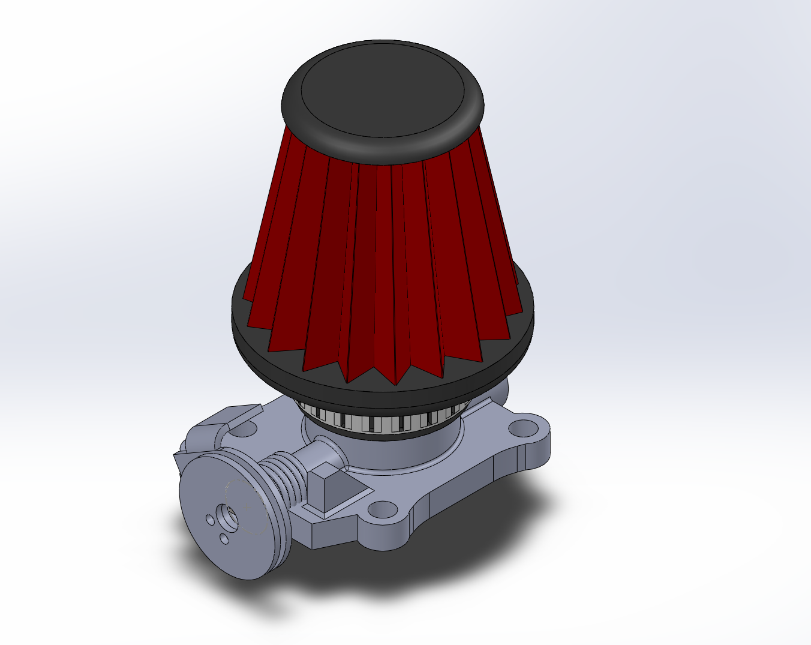
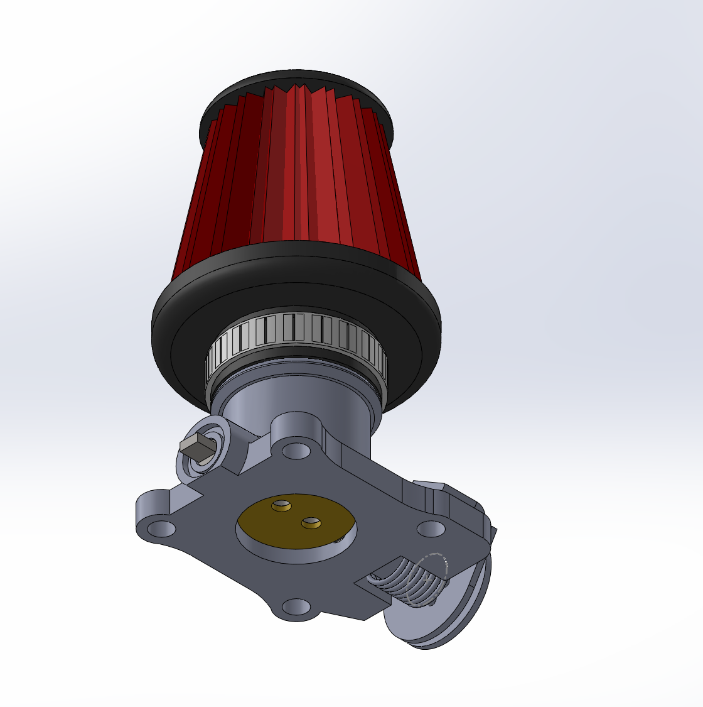
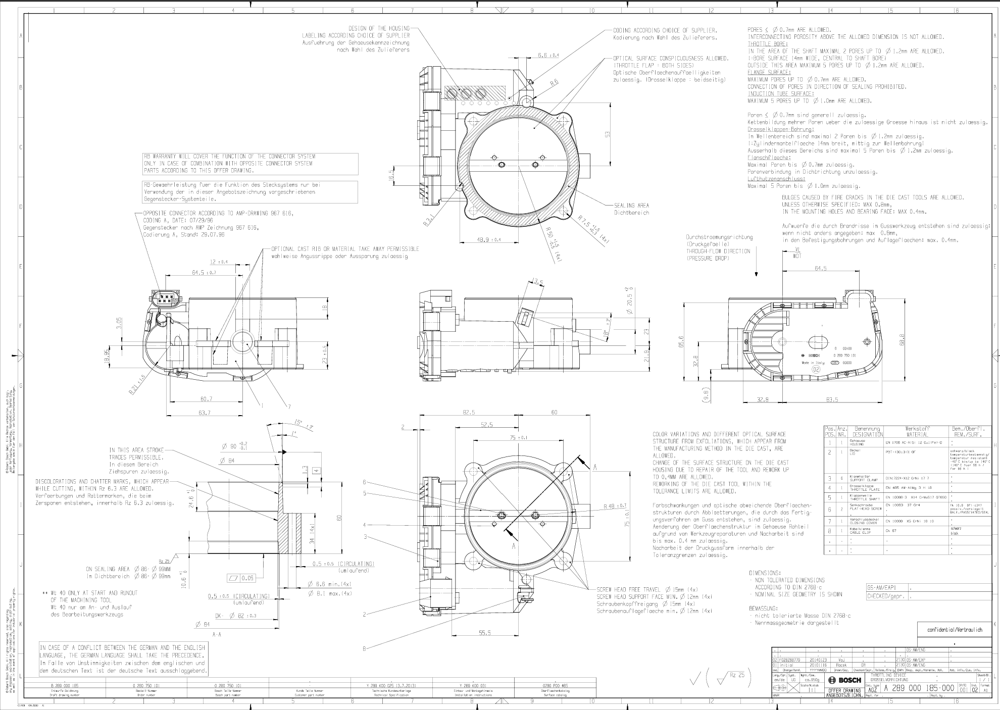
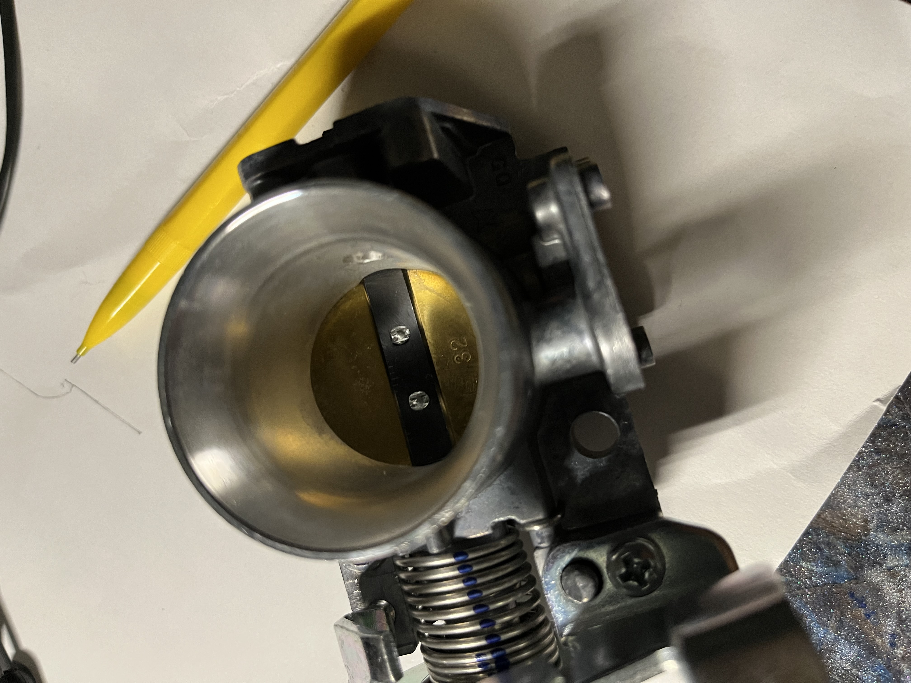
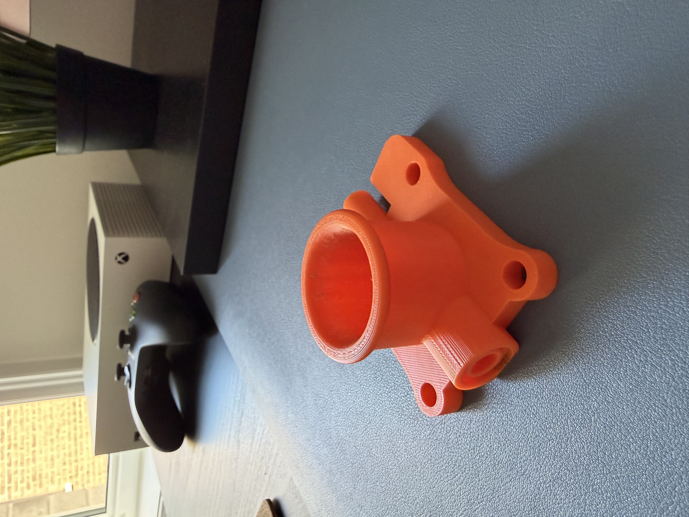
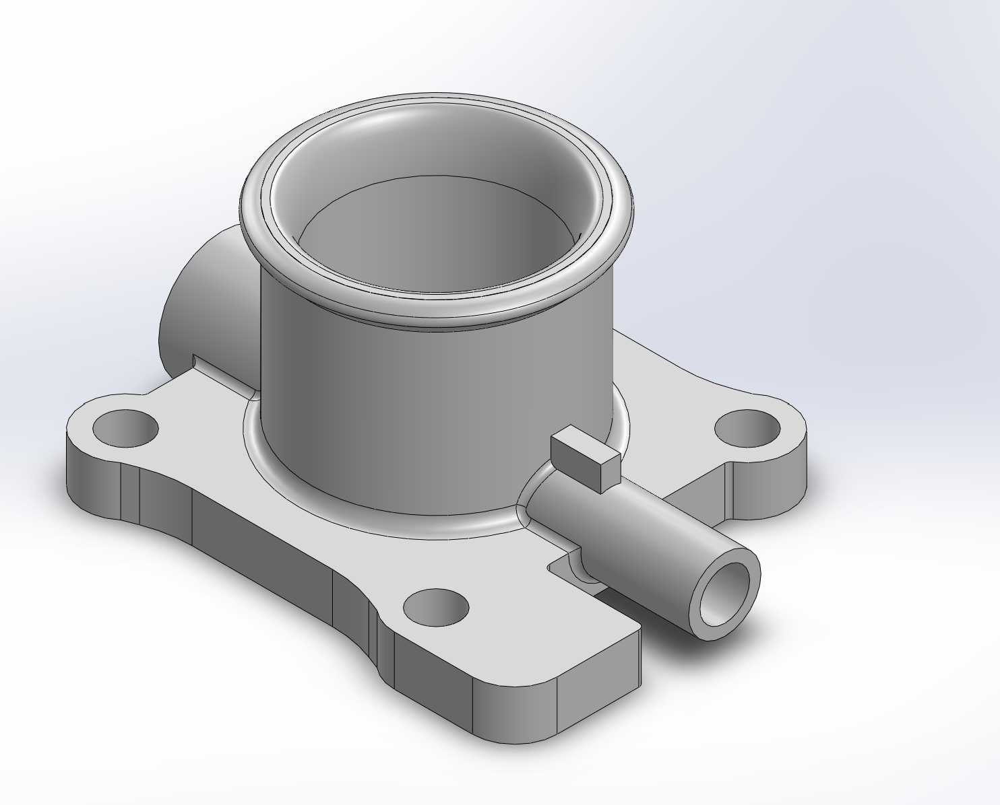
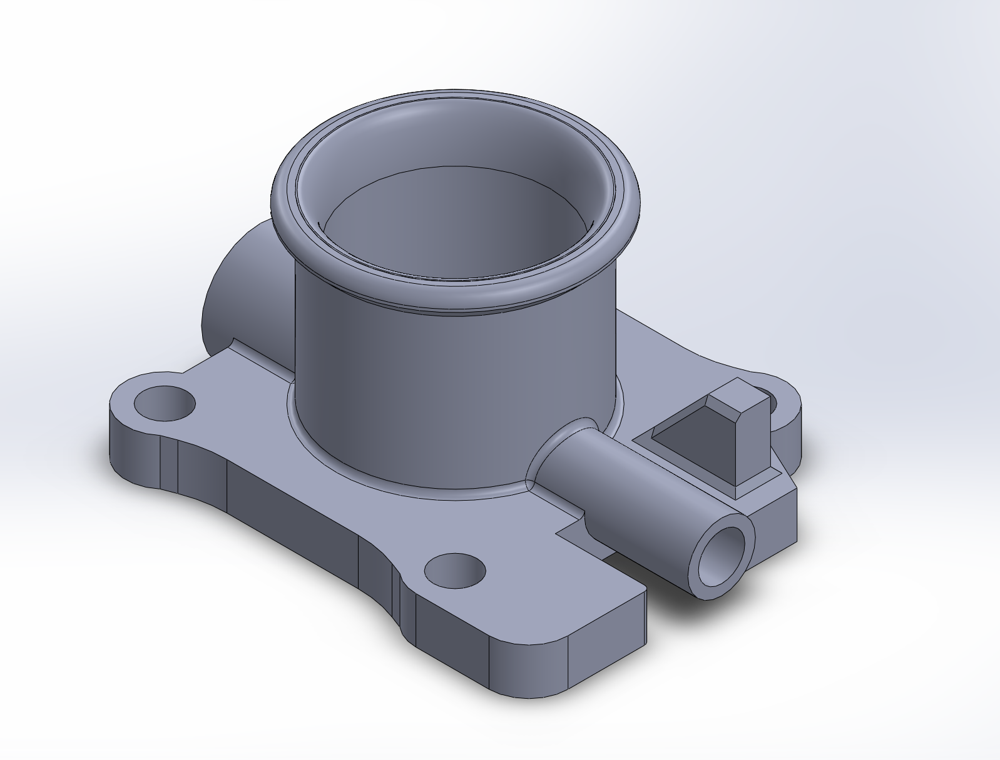
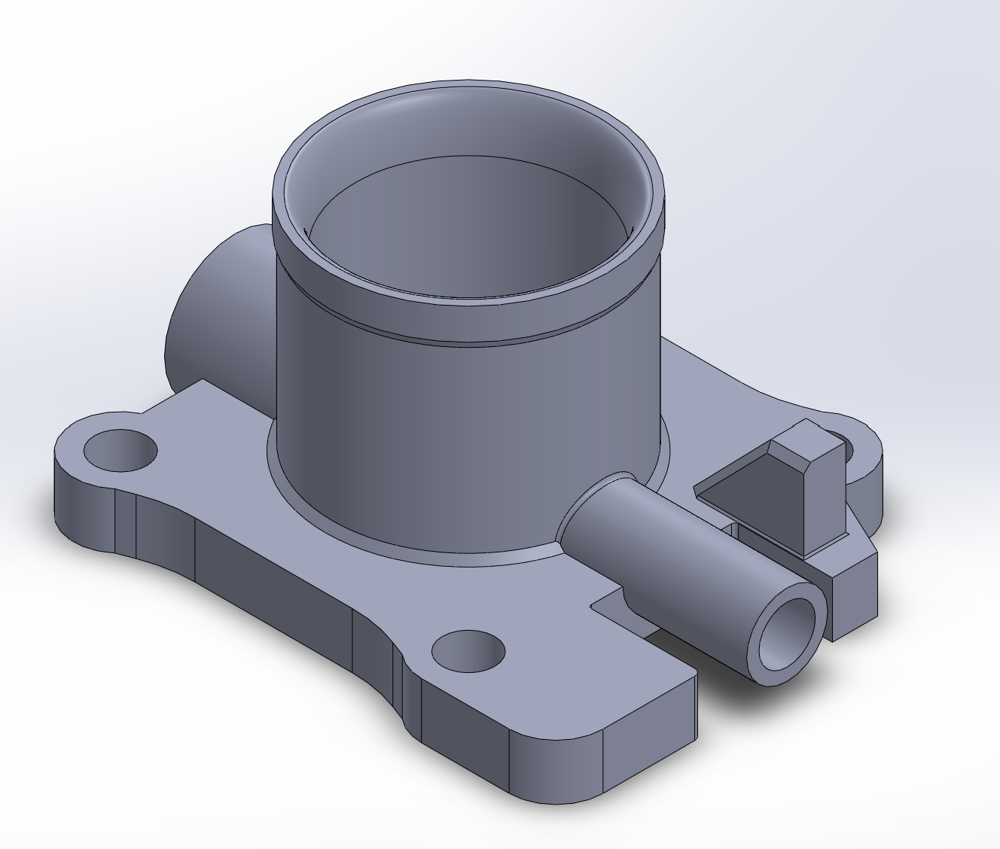
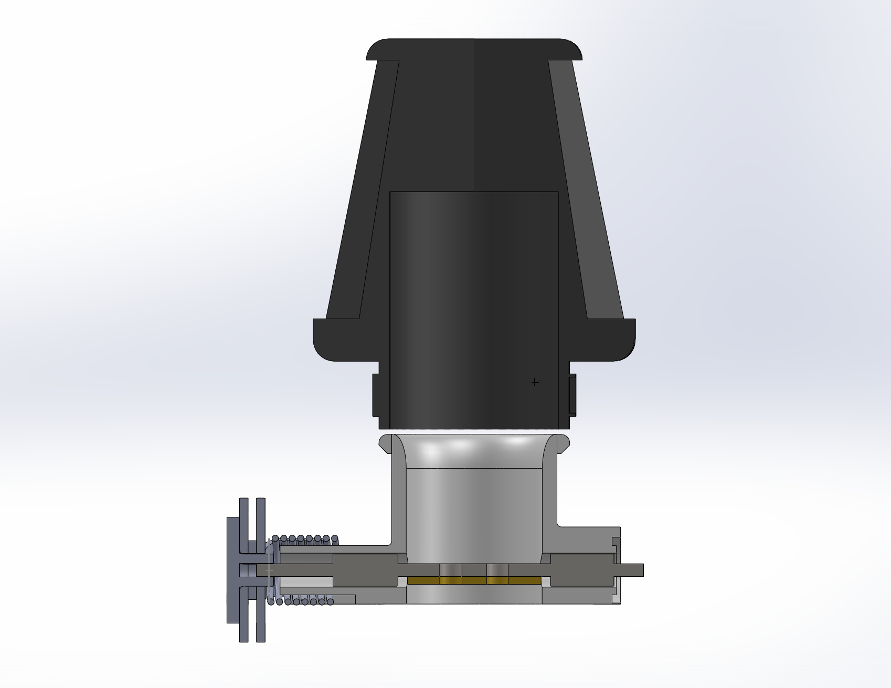
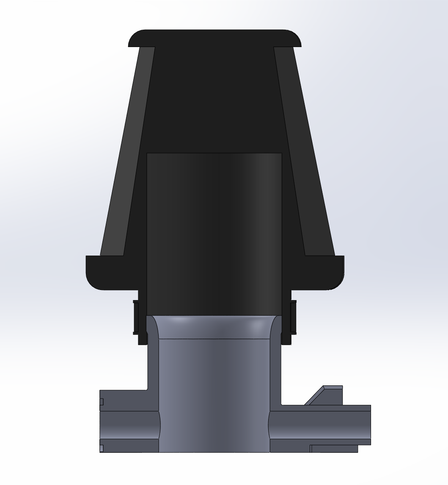

// PROJECT 03
Mechanical throttle body


final throttle body version assembly
Goal
This started as more of an open-ended project as a partner and I were told to make a mechanical backup throttle body that the team (Gryphon Racing Formula FSAE) could use in the future. Initially there was no fixed deadline attached. It only became a one week sprint once the electronic throttle body's approval got delayed right before FSAE Michigan.



One the left are the schematic's for the 32mm Bosch Electronic Throttle Body, on the right is the purchased unit that was harvested for parts along with one of the first prints.
Process
We started by purchasing a mechanical throttle body off AliExpress and harvesting some of its components. We then compared its design against the electronic throttle body we were meant to back up. From there, we pulled the electronic throttle's specs directly from Bosch's website to make sure every major mounting point would line up and began building the mechanical backup around those reference dimensions.
Most of our real design decisions came down to fit and tolerance, we needed everything to seat snugly without binding. Tolerancing ended up being the hardest part of the whole project, partly because it was my first real exposure to it. The trickiest piece was getting the valve to actually turn without interference once everything was assembled. Thankfully through much iteration the final model allowed for all components to fit snugly and operate how there supposed to.
The successes of this project came purely down to communication. As talking directly with our Driveline lead and getting the electronic throttle's specs ahead of time meant we were designing against real constraints from day one, instead of guessing and correcting later.



Throttle Body V1, V2, V3 from left to right.


Outer lip diameter was changed between V2 and V3.
Outcome
Luckily the electronic throttle body ended up getting approved just before competition so the mechanical backup was never needed on track. That said, the team is keeping it on file for future use in case a similar situation happens again. Despite it never being used I learned a valuable lessons on tolerancing and iterative design; lessons which carried over into my autonomous quadcopter project where making sure tolerances were correct was crucial for joining parts, spacing inserts and more.